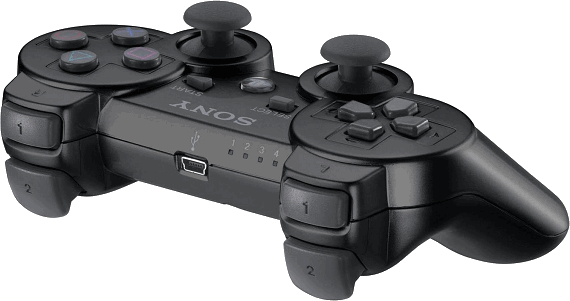

按鍵配置
操作項目 ＰＳ手把 鍵盤
－－－－－－－－－－－－－－－－－－－－－－
普通攻擊 □ J
蓄力攻擊 △ I
跳躍 ╳ M
無雙亂舞（奧義） ○ L
後視角移動、防禦 Ｌ１ L-Shift
類型招式 Ｒ１ O
切換操作角色左 Ｌ２ ,
切換操作角色右 Ｒ２ .
喚馬 ＳＥＬＥＣＴ /
切換情報畫面 ＳＴＡＲＴ Esc
切換地圖 Ｒ３ N
使用道具 Ｌ３ U
PS 手把對應圖
PS 手把正面，可方便你對應 PC 手把的配置。

這張 PS 手把角度，能讓你看出 L1、R1、L2、R2 是指哪些按鈕。
至於 L3 跟 R3，則是指左右兩個類比搖桿垂直往下押。少數人以為這兩顆磨菇頭只能 360 度轉來轉去，其實這兩顆按鈕可以當成一般按鈕往下押按。